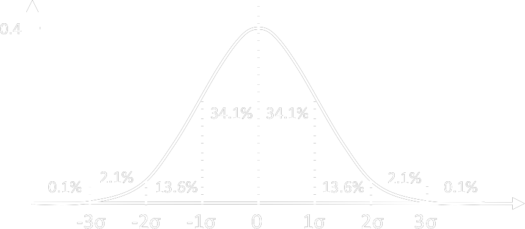

| Type I/II Errors |
|
|||||||||||||||||||||||||||||||||||||||||||||||||||||||||||||||||||||||||
| Type A/B standard uncertainty |
|
|||||||||||||||||||||||||||||||||||||||||||||||||||||||||||||||||||||||||
| Standard Error of the Mean (SEM) |
= repeatedly taking samples from a population
the SD of the sample distribution
\[ SEM = \frac{s}{\sqrt{n}} \]
where
s = sample SD
|
|||||||||||||||||||||||||||||||||||||||||||||||||||||||||||||||||||||||||
| Variation of Sampling Data |
Coefficient of Variation (CV)
\[ CV = \frac{SD}{mean} \]
Variance \[ variance = SD^2 \] |
|||||||||||||||||||||||||||||||||||||||||||||||||||||||||||||||||||||||||
| Confidence Interval |
\[ 95\% ~CI ~range = Sample~Mean \pm 1.96 \times SE \] 95% CI = when repeat the study many times,
the true population mean will be with in the range in 95% occasion
|
|||||||||||||||||||||||||||||||||||||||||||||||||||||||||||||||||||||||||
| SD for Normal Distribution |

|
|||||||||||||||||||||||||||||||||||||||||||||||||||||||||||||||||||||||||
| Predictive Rate |
|
|||||||||||||||||||||||||||||||||||||||||||||||||||||||||||||||||||||||||
| Distribution |
Poisson Distribution
mean = variance
|
|||||||||||||||||||||||||||||||||||||||||||||||||||||||||||||||||||||||||